挖仔尾生態區特性
|
挖仔尾地區以其豐富的濕地生態特色成為八里地區知名的賞鳥區，一年四季都有其特殊的風情。本地的濕地類型屬於林沼澤型及潟湖型並存的濕地，最主要的濕地植物以紅樹林植物的水筆仔為代表，本區業已規劃為「挖仔尾紅樹林保護區」。此地的水筆仔生長茂盛林相極佳，很適合作為水筆仔生態的觀察區。因為此地的地形特殊，在漲潮時會整個淹沒，所以帶來了極多的有機質，豐富的資源繁殖了數量龐大的蝦蟹貝類以及各種魚類，而食物增多的結果也使得鳥類聚集覓食，使此地的生物相極為豐富而多采多姿。由於此處原為一個小魚村的港口，目前仍有許多的船隻停泊於此地，其中有不少是以捕撈文蛤以及此地稱做孔雀蛤的綠淡菜為生，而在仔稚魚迴游的季節不少魚家會以販賣魩仔魚作為一項重要的收入來源。 |
||
|
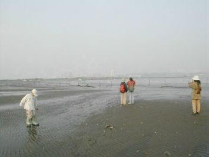 深廣的潮間帶 |
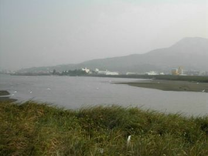 潟湖景觀 |
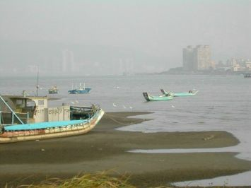 漲潮時的潮間帶 |
|
1.植物的種類 挖子尾生態體系當中相當重要的一部分是有非常多種類的河口植物，據台北市野鳥學會所做的調查發現，在此地共有三十五科、一百一十九種植物，除了水筆仔所紅樹林外，蘆葦也是代表性植物，另外還生長了一些耐旱、耐鹽度強的植物，如濱刺麥、蟛蜞菊、白茅和馬鞍藤，小徑上有咸豐草、昭合草、蔓荊、茵陳蒿、變葉藜等；以及黃槿等。 水筆仔又稱為「茄藤樹」，是屬於台灣目前尚存的四種紅樹林植物當中的一種(其他包括海茄苳，五梨鮫以及欖李)，水筆仔最大的特點是他是屬於胎生的植物，水筆仔約在每年的夏季開花，之後結出長長筆狀的種子(其名便由此而來)，種子在樹上萌發之後才掉入土中，如此可以確保種子發育成小苗的機會提高，這在以種子繁殖下一代的植物當中算是一項很特殊的演化。 水筆仔的種子在春天時發芽，葉子呈對生狀，長橢圖形，厚革質。水筆仔厚厚的葉表片皮可以防止不必要的水分喪失；此外，他也會將多餘的鹽分儲存在老葉中，在落葉時一併將鹽分排出體外，像這種具有排鹽保水功能的葉片也是使得水筆仔能在河口惡劣的環境下生存的演化之一。 在此地的另一項大宗的植物群落是蘆葦，在靠近出海口處生長了一大片的蘆葦叢。蘆葦是多年生的禾本科植物，植株高約l公尺-3公尺，根莖綿延的很長，生長在水邊，有很強的環境適應能力，繁殖擴展的很迅速，總是大面積的簇生在一起，屬於潮間帶的先驅植物。蘆葦葉互生，具有中空狀的莖，葉片約2公分寬。葉形屬於長披針形，葉常約50公分。8至12月間盛開白綠色或褐色佈滿絹毛的小花，每一小花穗有3朵小花，花序最下方的小穗為雄花，其餘的是雌雄同花。冬季植株會凋萎，新植株會在第二年春季由地下莖長出來。而蘆葦枯黃後的葉片，是沼澤地中腐植質的主要來源之一，對於整個濕地環境有相當大的生態上的意義。 |
||
|
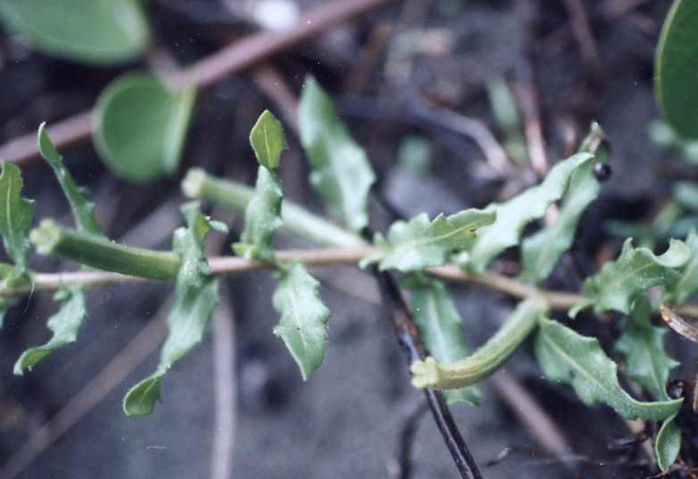 水丁香的種子 |
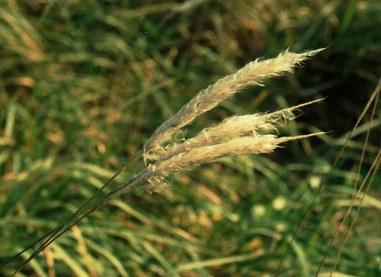 白茅的花 |
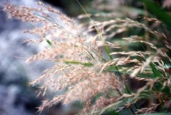 蘆葦花 |
|
2.鳥類 挖仔尾是北部地區重要的候鳥及過境鳥的棲息區，，由於此地的食物資源豐富，在冬季時沙灘及泥灘地上常聚集成群的候鳥，常見的有東方環頸行鳥，小環頸行鳥以及磯鷸等鷸行鳥科鳥類大規模的棲息，是台北地區秋冬季賞鳥的一個重要據點，也是相當重要的冬候鳥棲息地。 而且不只冬候鳥的季節，夏季的挖仔尾也是處處生機，夏天的候鳥（如：小燕鷗，黃頭鷺等）以及各種留鳥。夏季時天空中偶而出現的燕鷗類的鳥類會讓你驚豔；而換上夏羽的黃頭鷺也在小白鷺與夜鷺群中增加光彩。如果你能耐著性子坐在紅樹林旁等待，你會看見成群的綠繡眼以及粉紅鶯嘴在林間穿梭，他們繽紛而小巧的身影，會讓你體會鳥類世界的奧妙。 |
||
|
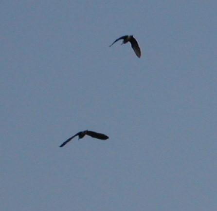 飛翔的夜鷺 |
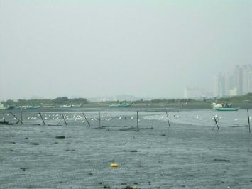 冬天的候鳥 |
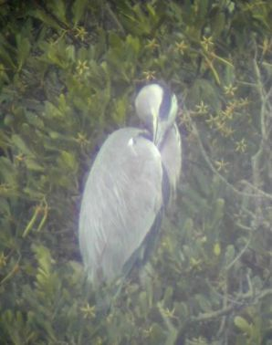 蒼鷺在水筆仔上休息 |
|
3.螃蟹、彈塗魚及軟體動物 清白招潮蟹是本地極明顯的住客，在大老遠的地方就可以看到沙灘上白茫茫的一片，尤其他們習慣將泥糞堆在洞口的特性，讓整個泥灘地都佈滿一個個的小沙丘，令人一眼就可以看出洞穴的主人是誰。仔細觀察他們的活動，你可以發現粗心的他們經常誤闖別人的家，此時你會看見屋裡的屋主氣沖沖的會動著螯趕走不速之客，但有時候因為外來客的強大，屋主反而被趕出自己的家呢！ 此處另一種常見的招潮蟹是網紋招潮蟹，雄蟹鮮豔而明顯的大螯是他最主要的表徵，而雌蟹雖然沒有明顯的螯，但是身上也帶著紅色的她可一點也不比雄蟹遜色。網紋招潮蟹的洞口特徵也很明顯，像小火山口似的洞裡正是牠甜蜜的家喔！相較於清白招潮蟹盤據在整個空曠的泥灘地上，網紋招潮蟹最佳的觀察點則是在觀景涼亭附近的水筆仔林間，你會看到正在求得女士芳心的雄蟹努力揮動著大螯喔。 此地還有一種俗稱幽靈蟹的斯氏沙蟹，他的幼蟹有非常好的保護色，當幼蟹停止不動時很容易將牠與泥灘環境視為一體，當長成為成蟹時身體成紅色調，極為醒目。螯足一大一小，有相當長的四對步足，眼睛特大呈橢圓。他能夠在相當乾燥的沙地上行動，也是挖仔尾地區常見的蟹類之一。 彈塗魚又名泥猴、石貼仔。全身似泥澤色調的灰褐色，並佈滿深色的斑紋。由於他具有特大的肉質化胸鰭，適於泥澤的爬行，所以一直以來被視為可以行走的魚類，漲潮時在水中生活，但是退潮時亦可以在地面上自由爬行，非常適應河口地區漲退潮的環境變化，真可謂是水陸雙棲的高手。在挖仔尾的小漁港碼頭附近，只要你靜止不動就會看到很多彈塗魚在四周爬行，爬行時的姿勢跟嘴巴一張一閤的呼吸讓他顯得特別可愛。 另外挖仔尾地區亦出產相當多的貝類，文蛤還有俗稱孔雀蛤的綠淡菜都是當地漁民賴以維生的重要魚獲，而在紅樹林的樹幹上也可以發現很多的玉黍螺，只不過平常我們的目光都被螃蟹跟鳥吸引去了喔！下次有機會光臨挖仔尾，記得要去找找他們呢！
|
||
|
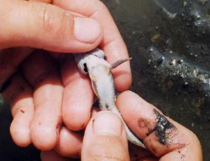 彈塗魚的吸盤 |
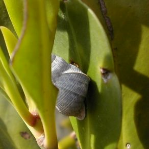 水筆仔上的玉黍螺 |
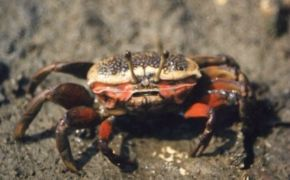
網紋招潮蟹(雌) |
|
4.紅樹林之爭議： 其實目前我們認為生態豐富的挖仔尾紅樹林，根據學者的研究應該並非本地原有的自然景觀，在日據時代日籍學者工藤祐舜曾撰寫「福爾摩莎的紅樹林」一文，記載當時台灣主要的紅樹林棲地只有高雄灣、新豐、基隆三地，當時的確有紀錄到竹圍地區有水筆仔，但是數量似乎不多，日人對此地並沒有紅樹林的記載，而且相傳在日據時代時有吳姓、黃姓兩位仕紳引進少許水筆仔幼苗，種植於竽蓁林附近的河岸，至於從何處引進則無法考證。所以挖仔尾的紅樹林並非本地原有的植物群落。對於此地的狀況來說，是否應以人為方式維持大規模的水筆仔純林實在值得商榷，因為隨著水筆仔的面積逐漸擴張，一些蟹類與鳥類的覓食空間被逐步壓縮，似乎反而造成了另一種類的生態破壞。 另外，雖然此地劃歸成為保護區，但是由於完全沒有人在管理，垃圾處處，而每逢假日總是見到很多家長帶孩子來抓螃蟹，就連舉辦親子生態活動時都經常看到有人摘些植物或者抓些螃蟹回家，雖然這好像是小事，但是每個遊客抓幾隻這裡的生態環境就會漸漸被破壞，看起來可愛的濱刺麥種子，被遊客大把大把的帶回家，請問這樣要怎麼擴張他們的植群範圍呢？很多事情看起來是小事，但是其實小事累積起來的結果就成了另一場生態浩劫了。希望您來到挖仔尾旅遊時，除了美麗的相片跟快樂的回憶之外什麼都不要帶走，保留下這個小小的動物樂園吧！ |
||
|
|
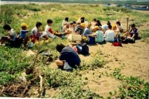 | |